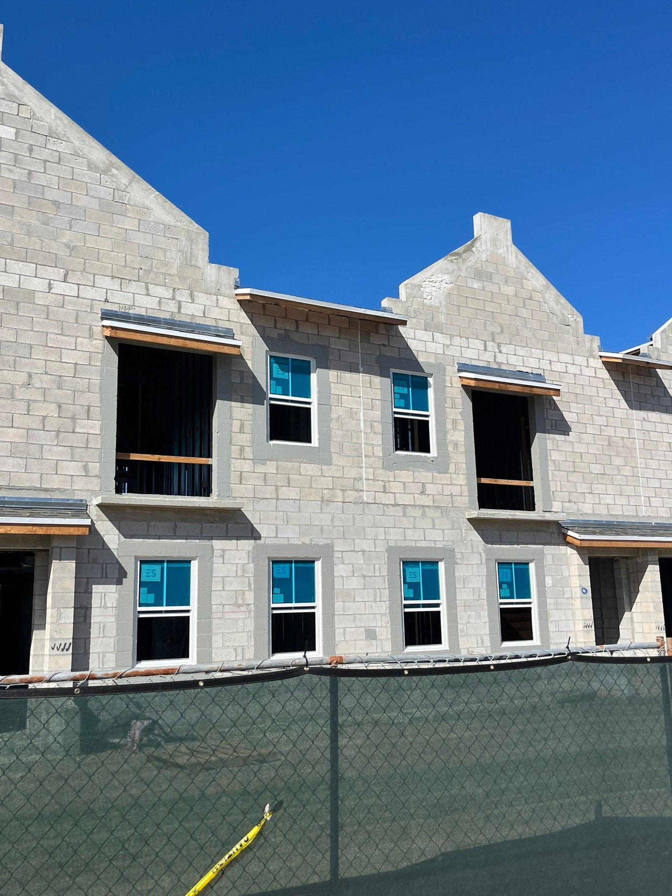

The phrase "hurricane proof windows" is a useful marketing shorthand that is not technically accurate. No window product - commercial or residential - is certified as proof against every possible hurricane scenario. The honest terms are "hurricane impact rated," "hurricane resistant," and "hurricane rated," and they all describe products tested to defined missile and pressure standards with published upper limits. This article explains the rating system, shows what commercial hurricane protection windows actually do under storm conditions, and lays out how to specify and verify hurricane-rated glazing correctly on a Florida commercial project.

The Terminology Problem
"Hurricane proof windows," "hurricane resistant windows," "hurricane protection windows," "hurricane rated windows," "storm proof windows," and "impact windows" all refer to the same product category in commercial Florida work: laminated-glass window assemblies tested to missile impact and cyclic pressure standards under FBC 2023, and carrying either a Florida Product Approval or a Miami-Dade Notice of Acceptance.
The different labels come from consumer marketing and search behavior, not from different product tiers. On a Division 08 commercial specification, the term used is almost always "impact rated" or "hurricane impact rated," and the referenced standards are ASTM E1886/E1996 or TAS 201/202/203. On an insurance wind-mitigation inspection (OIR-B1-1802), the term is "impact-rated glazing." On an insurance policy, it is "wind-borne debris protection." Everything else is search-friendly language layered on top of the same technical reality.
Why "Hurricane Proof" Is Not the Right Word
Every tested product has an upper bound. A window rated to DP80 with Large Missile Level D has been physically tested at those levels - a 9-lb 2x4 at 50 fps, and 9,000 cycles of positive and negative pressure sweeping across the DP range. Beyond those tested limits, performance is not certified. Under extreme Cat 5 conditions with debris larger or faster than the tested missile, or pressures exceeding the tested DP, any product can exceed its rated envelope.
What a properly rated commercial hurricane window does reliably is hold the envelope closed under the design events defined by FBC 2023. That is the point. The code sets design events at recurrence intervals and probability levels calibrated to Florida's hurricane climate. A window rated to those events will, with overwhelming probability, prevent the envelope breach that initiates structural cascade failure during a hurricane. It is not an absolute guarantee against every conceivable event - it is a high-probability performance floor against the events the code is written around.
The Actual Rating System
Commercial hurricane-rated windows are classified by three test results that appear on the product approval document.
Design Pressure (DP)
The pressure in pounds per square foot (psf) the window was tested at, both positive (wind-on) and negative (wind-off). Calculated by the structural engineer per ASCE 7 and FBC 2023, specified per opening, confirmed at permit review.
Missile Level
Large Missile (Level D) - 9-lb 2x4 at 50 fps - for openings within 30 feet of grade in wind-borne debris regions. Small Missile - ten steel balls at 89 fps - for openings above 30 feet. A product can be tested to one or both.
Tested Configuration
The specific size, glass makeup, frame material, and anchor pattern the product was tested at. Substitutions outside the tested configuration void the approval.
| Marketing Term | Technical Equivalent | Where You See It |
|---|---|---|
| Hurricane proof windows | Impact rated windows | Consumer ads, online search |
| Hurricane resistant windows | Impact rated windows | Manufacturer marketing |
| Hurricane protection windows | Impact rated windows | Consumer ads, retail signage |
| Hurricane rated windows | Impact rated windows | Industry shorthand |
| Storm proof / storm rated windows | Impact rated windows | Non-Florida storm markets |
| Impact rated / impact windows | Impact rated windows | Code, spec, permit documents |
What Hurricane Protection Windows Actually Do Under a Storm
In a real storm event on a properly specified commercial building, a hurricane impact window experiences a predictable sequence.
- Pre-landfall - Wind pressure builds as the storm approaches. The window, anchored to the structure with tested fasteners, transfers this load to the building frame. No damage; the product is operating well within its rated range.
- Debris impact - Wind-borne debris (roof gravel, branches, loose signage) strikes the window. On harder hits, the outer glass lite cracks. The inner lite and the interlayer hold the cracked outer lite in place. The opening stays sealed.
- Sustained pressure loading - Through the eyewall and multi-hour wind exposure, the window - possibly cracked - continues to resist cyclic positive and negative pressure. This is what the 9,000-cycle lab test simulates. The glass stays in the frame; the envelope stays closed.
- Post-storm - Cracked units are visible from outside; they are replaced on a normal schedule. The building interior is dry, structurally sound, and operationally viable.
The difference between a hurricane-rated window and a standard commercial window is most visible at step 2. When a standard window is hit by debris, the glass goes through. When an impact window is hit, the glass cracks and holds. That single difference - envelope breach vs envelope intact - drives the majority of the commercial insurance and structural outcome. See our how impact windows protect Florida business article for the detailed structural cascade breakdown.
Commercial Specification Standards
On a commercial hurricane protection project, the spec is the document that controls. A correctly written Division 08 specification for impact-rated glazing includes:
- Reference to FBC 2023, Chapter 16 (wind loads) and Chapter 17 (structural tests)
- Reference to ASTM E1886 and E1996 (non-HVHZ) or TAS 201/202/203 (HVHZ)
- Minimum design pressure per opening per engineering calculations
- Missile level (Large or Small) per opening height
- Required Florida Product Approval or Miami-Dade NOA documentation
- Laminated glass makeup, including interlayer type (PVB or SGP)
- Frame system and finish requirements
- Anchor type, pattern, and embedment depth consistent with tested configuration
- Perimeter sealant and flashing requirements
- Warranty requirements (system, glass, sealant)
The commercial specification is cross-referenced against the calculated design pressures from the structural engineer and the approved product data from the manufacturer. At plan review, the AHJ confirms alignment between all three. For architects and GCs writing the spec, the impact rated glass requirements article covers the full 2026 specification framework.
Verifying a Window Is Genuinely Hurricane Rated
On commercial work, marketing claims are not sufficient. Every genuinely hurricane-rated window product carries one of two documents:
Florida Product Approval (FL number)
Issued by the Florida Building Commission. Valid for non-HVHZ wind-borne debris region installations. The FL number links to a document listing tested design pressures, missile level, tested configurations, glass makeups, and installation anchor patterns.
Miami-Dade Notice of Acceptance (NOA number)
Issued by the Miami-Dade County Product Control Section. Valid in HVHZ (and, by reference, most non-HVHZ jurisdictions as well, since HVHZ testing is more stringent). The NOA document is the most rigorous hurricane rating in the United States.
If a supplier cannot produce a current FL number or NOA number on request, the product is not specifiable on commercial work. Expired approvals are not acceptable. The AHJ will reject them at permit review, costing weeks of schedule recovery.
Specifying for Cat 5 Exposure
For commercial buildings in directly exposed coastal Florida locations - barrier-island retail, hospitality on the ocean, high-rise near the coastline - specifying above code minimum is often the right move.
- Specify a DP rating 15-25% above the calculated minimum, as a safety margin for atypical events.
- Use SGP (SentryGlas) interlayer rather than PVB for the improved tear strength under extreme loading.
- Specify Large Missile testing even above 30 feet if exposure is unusual (barrier island, no adjacent windbreak).
- Coordinate anchor specification with the structural engineer - the anchor is the weakest practical link in most systems.
- Use commercial-grade product lines (ESWindows ES-8000, ES-9000) rather than residential-tier products in commercial DP ranges.
The marginal cost of over-specification at design is modest - single-digit percentage on the envelope scope - compared to the cost of a breach event and the insurance and operational consequences that follow. For the full commercial cost framework, see our commercial impact glass cost guide.
Hurricane Protection Beyond the Window
Windows are the most visible piece of hurricane protection, but a commercial envelope has other load paths. On a well-designed project, the windows are specified alongside:
- Commercial impact-rated entrance doors (typically SGD-2020 or equivalent sliding systems, or commercial impact swing doors)
- Roofing systems rated to matching uplift requirements
- Perimeter sealants and flashing detailed to fail-last behind the glazing
- Structural connection to the building frame at anchor points
- Soffit and vent protection to prevent indirect envelope pressurization
The window is one component in a tested envelope system. A correctly installed impact-rated storefront on a building with a compromised roof or unprotected soffit is not a complete solution. For comprehensive commercial storm prep, see our hurricane preparation for commercial impact glass article.
ACG and Commercial Hurricane Protection
ACG is a CGC-licensed Florida commercial glazing subcontractor (FL CGC #1531993) headquartered in West Palm Beach. Commercial Division 08 scope, statewide. Our primary commercial hurricane impact product partner is ESWindows, whose ES-8000 pre-glazed storefront and ES-9000 window wall carry Florida Product Approvals and Miami-Dade NOAs across the full commercial DP range. Recent commercial hurricane protection installations include Wave Food Hall (Cocoa Beach), KLUS Lighting (Vero Beach), Lake Park Innovation, Baron Shoppes Tradition, Harbour Cay II, and Villa L'Onz (Riviera Beach).
Pre-glazed storefront is a key ACG differentiator on commercial hurricane work. The factory-glazed ESWindows ES-8000 system arrives at the jobsite with impact-rated glass already installed in the frame, eliminating field-glazing sequences and compressing install schedules - which matters most on occupied retrofits where downtime carries revenue loss.
Ready to get started?
Send drawings and our team delivers a detailed Division 08 scope with system recommendations and 2026 pricing inside 48 hours. Call (772) 486-7711 or email connor@acglass.com.